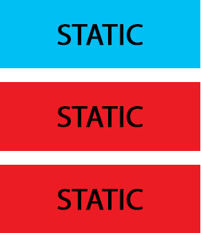
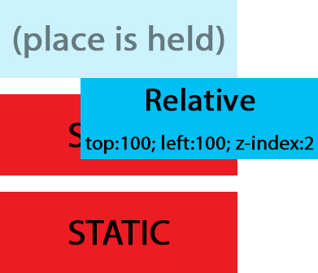
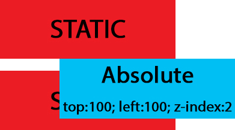

Absolute, Relative, Fixed Positioning: How Do They Differ?
By Sepand Assadi
Janury 17th, 2016
An important concept to understand first is that every single element on a web page is a block. Literally a rectangle of pixels. This is easy to understand when when you set the element to display: block; or if that element is by default display: block; This means you can set a width and a height and that element will respect that. But elements that are display: inline, like a span by default, are also rectangles, they just flow onto the page different, lining up horizontally as they can.
Now that you are picturing every single page element as a block of pixels, we can talk about how positioning is used to get the blocks of pixels exactly where you want them to go. We're going to leave off any discussion of the box model, but that factors into this as well...
- Static. This is the default for every single page element. Different elements don't have different default values for positioning, they all start out as static. Static doesn't mean much, it just means that the element will flow into the page as it normally would. The only reason you would ever set an element to position: static is to forcefully-remove some positioning that got applied to an element outside of your control. This is fairly rare, as positioning doesn't cascade. 
- Relative. This type of positioning is probably the most confusing and misused. What it really means is "relative to itself". If you set position: relative; on an element but no other positioning attributes (top, left, bottom or right), it will no effect on it's positioning at all, it will be exactly as it would be if you left it as position: static; But if you DO give it some other positioning attribute, say, top: 10px;, it will shift it's position 10 pixels DOWN from where it would NORMALLY be. I'm sure you can imagine, the ability to shift an element around based on it's regular position is pretty useful. I find myself using this to line up form elements many times that have a tendency to not want to line up how I want them to.
There are two other things that happen when you set position: relative; on an element that you should be aware of. One is that it introduces the ability to use z-index on that element, which doesn't really work with statically positioned elements. Even if you don't set a z-index value, this element will now appear on top of any other statically positioned element. You can't fight it by setting a higher z-index value on a statically positioned element. The other thing that happens is it limits the scope of absolutely positioned child elements. Any element that is a child of the relatively positioned element can be absolutely positioned within that block. 
- Absolute. This is a very powerful type of positioning that allows you to literally place any page element exactly where you want it. You use the positioning attributes top, left bottom and right to set the location. Remember that these values will be relative to the next parent element with relative (or absolute) positioning. If there is no such parent, it will default all the way back up to the element itself meaning it will be placed relatively to the page itself.
The trade-off, and most important thing to remember, about absolute positioning is that these elements are removed from the flow of elements on the page. An element with this type of positioning is not affected by other elements and it doesn't affect other elements. This is a serious thing to consider every time you use absolute positioning. It's overuse or improper use can limit the flexibility of your site.. 
- Fixed. This type of positioning is fairly rare but certainly has its uses. A fixed position element is positioned relative to the viewport, or the browser window itself. The viewport doesn't change when the window is scrolled, so a fixed positioned element will stay right where it is when the page is scrolled, creating an effect a bit like the old school "frames" days.
Try this website, it has a working example where you can change the positioning of each element inside of the container. The container itself has a position:relative Have fun!